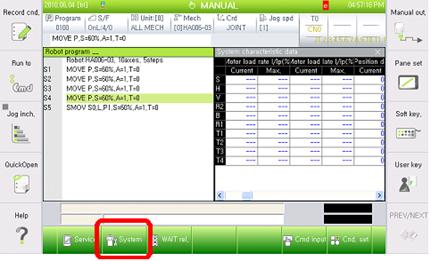
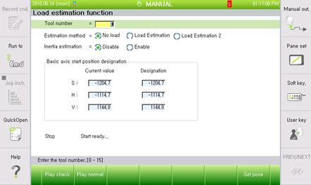

Previous error code: E0117 (¡Û axis) Position deviation set value exceeded
1.1.75.1. Outline
The position deviation is larger than the set value. If the difference between the location of moving command and the actual location is too large during the operation of robot that controlled by the servo, the servo board will detect an error (during servo operation) and immobilize the robot.
This error will occur when the position deviation is large and the load estimation is not executed.
1.1.75.2. Causes and examine methods
|
(1) Execute load estimation and then check if the error occurs again. |
(1) Execute load estimation and then check if the error occurs again.
Using measuring equipment is recommended, but if it is not an option, load can be measured by using a ¡®load estimation function¡¯ from the controller. However this function only can measure the load of a tool that attached at the end of the Robot.
Method to estimate the load is as below.
n Enter to the load estimate function
¡º[F2]: System¡» ¡æ ¡º6: Automatic constant setting¡»¡æ ¡º4: Load estimation function¡»

n Select the tool number, estimation method, enable status of inertia estimation from the load estimation function.

¨ª Tool number to save after the load estimation
¨ª Estimation method: Load estimation 2
¨ª Inertia estimation: Enable
n Click Normal Drive to execute.
Press the Motor On switch, and hold the deadman and click the Play Normal.
Decide if you want to register the result of load estimation.
n Once the load estimation drive has completed, the estimated result will be displayed on the screen.
If you press the close button, a message box will appear to ask you if you want to reflect the result. If you click ¡®yes¡¯ it will be saved.